Unit Circle
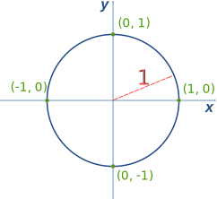
The "Unit Circle" is a circle with a radius of 1.
Being so simple, it is a great way to learn and talk about lengths and angles.
The center is put on a graph where the x axis and y axis cross, so we get this neat arrangement here.
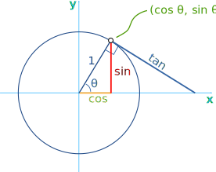
Sine, Cosine and Tangent
Because the radius is 1, we can directly measure sine, cosine and tangent.
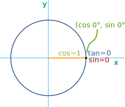
What happens when the angle, θ, is 0°?
cos 0° = 1, sin 0° = 0 and tan 0° = 0
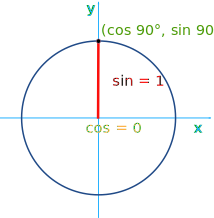
What happens when θ is 90°?
cos 90° = 0, sin 90° = 1 and tan 90° is undefined
Try It Yourself!
Have a try! Move the mouse around to see how different angles (in radians or degrees) affect sine, cosine and tangent
The "sides" can be positive or negative according to the rules of Cartesian coordinates. This makes the sine, cosine and tangent change between positive and negative values also.
Also try the Interactive Unit Circle.
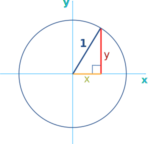
Pythagoras
Pythagoras' Theorem says that for a right angled triangle, the square of the long side equals the sum of the squares of the other two sides:
x2 + y2 = 12
But 12 is just 1, so:
x2 + y2 = 1
equation of the unit circle
Also, since x=cos and y=sin, we get:
(cos(θ))2 + (sin(θ))2 = 1
a useful "identity"
Important Angles: 30°, 45° and 60°
You should try to remember sin, cos and tan for the angles 30°, 45° and 60°.
Yes, yes, it is a pain to have to remember things, but it will make life easier when you know them, not just in exams, but other times when you need to do quick estimates, etc.
These are the values you should remember!
| Angle | Cos | Sin | Tan=Sin/Cos |
|---|---|---|---|
| 30° | √32 | 12 | 1 √3 = √3 3 |
| 45° | √22 | √22 | 1 |
| 60° | 12 | √32 | √3 |
How To Remember?
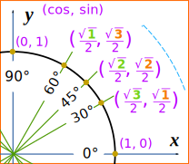
To help you remember, cos goes "3,2,1"
cos(30°) = √32
cos(45°) = √22
cos(60°) = √12 = 12
And, sin goes "1,2,3" :
sin(30°) = √12 = 12 (because √1 = 1)
sin(45°) = √22
sin(60°) = √32
Just 3 Numbers
In fact, knowing 3 numbers is enough: 12 , √22 and √32
Because they work for both cos and sin:
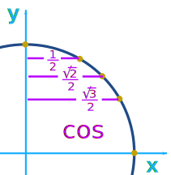 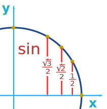
Your hand can help you remember:
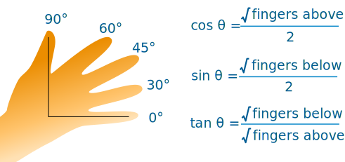
For example there are 3 fingers above 30°, so cos(30°) = √32
What about tan?
Well, tan = sin/cos, so we can calculate it like this:
tan(30°) =sin(30°)cos(30°) = 1/2√3/2 = 1√3 = √33 *
tan(45°) =sin(45°)cos(45°) = √2/2√2/2 = 1
tan(60°) =sin(60°)cos(60°) = √3/21/2 = √3
* Note: writing 1√3 may cost you marks so use √33 instead (see Rational Denominators to learn more).
Quick Sketch
Another way to help you remember 30° and 60° is to make a quick sketch:
| Draw a triangle with side lengths of 2 | 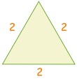 | |
|
Cut in half. Pythagoras says the new side is √3 12 + (√3)2 = 22
1 + 3 = 4 |
 |
|
| Then use sohcahtoa for sin, cos or tan | 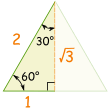 |
Example: sin(30°)
Sine: sohcahtoa
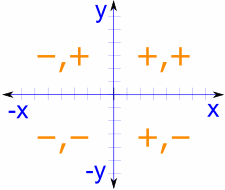
The Whole Circle
For the whole circle we need values in every quadrant, with the correct plus or minus sign as per Cartesian Coordinates:
Note that cos is first and sin is second, so it goes (cos, sin):
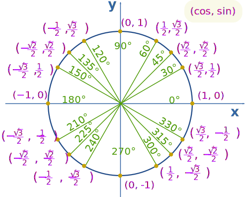
Example: What is cos(330°) ?
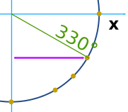
Make a sketch like this, and we can see it is the "long" value: √32
And this is the same Unit Circle in radians.
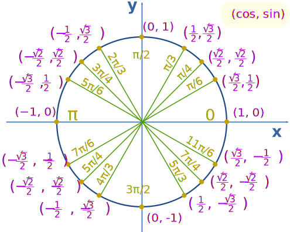
Example: What is sin(7π/6) ?
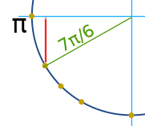
Think "7π/6 = π + π/6", then make a sketch.
We can then see it is negative and is the "short" value: −½
Footnote: where do the values come from?
We can use the equation x2 + y2 = 1 to find the lengths of x and y (which are equal to cos and sin when the radius is 1):
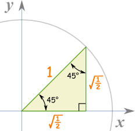
45 Degrees
For 45 degrees, x and y are equal, so y=x:
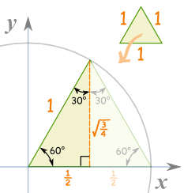
60 Degrees
Take an equilateral triangle (all sides are equal and all angles are 60°) and split it down the middle.
The "x" side is now ½,
And the "y" side is:
30 Degrees
30° is just 60° with x and y swapped, so x = √(¾) and y = ½
And:
Also:
And here is the result (same as before):
| Angle | Cos | Sin | Tan=Sin/Cos |
|---|---|---|---|
| 30° | √32 | 12 | 1 √3 = √3 3 |
| 45° | √22 | √22 | 1 |
| 60° | 12 | √32 | √3 |